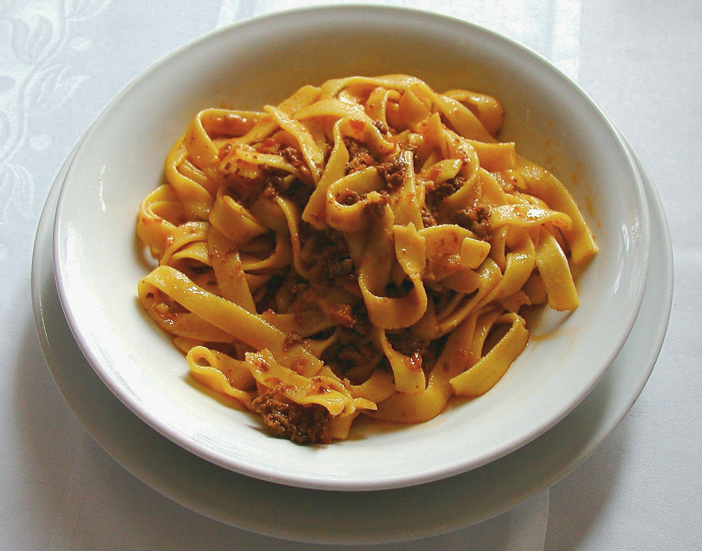

Ragu

Tagiatelle al ragu is a traditional recipie from Bologna, Italy. It is simple
but time consuming to make. This recipie serves 6.
- Coarsely ground beef (see note): 1 lb (400g)
- Fresh pork pancetta, slices: 6 oz (150g)
- ½ onion, peeled: about 2 oz (60g)
- 1 medium carrot, peeled: about 2 oz (60g)
- 1 celery stalk, trimmed: about 2 oz (60g)
- ½ cup (1 glass) of red or white wine
- Strained tomatoes: 7 oz (200g)
- Tomato paste (double-concentrated): 1 tbsp
- ½ cup (1 glass) of whole milk (optional)
- Light meat or vegetable broth (or stock cubes)
- Extra virgin olive oil: 3 tbsp
- Salt and pepper
- In a heavy non-stick 10-inch (24-26cm) casserole (aluminium or enamelled cast-iron
(Dutch oven) or terracotta saucepans can be used), melt the ground or chopped pancetta
with olive oil.
- Using a chef’s or chopping knife, finely chop the onion, celery, and carrot (do not use a food
processor); add the vegetables to the oil and pancetta and cook over low heat, stirring constantly
with a wooden spoon until softened but not browned.
- Raise the heat to medium and add the meat, break it up, then cook for about ten minutes, always
stirring, until it sizzles and browns.
- Add the wine; cook over medium heat until it has completely evaporated.
- Add the tomato paste and purée. Mix well; add a cup of boiling stock (or water) and simmer,
covered, for about 2 hours (or 3 depending on preference and type of meat),
adding hot broth (or water) as needed.
- Add any milk (traditionally used) half way through the cooking; allow to evaporate
completely.
- Season with salt and pepper before serving. When ready the sauce will be a rich maroon
hue, thick and glossy.Coarsely ground beef (see note): 1 lb (400g)
Home